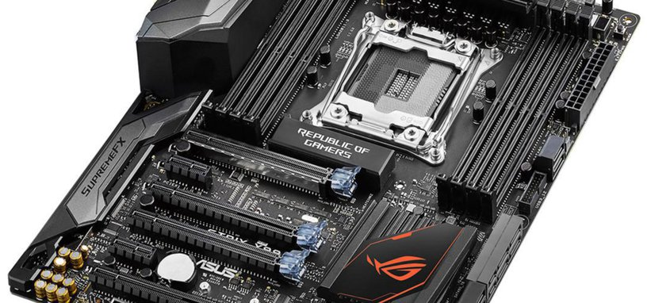
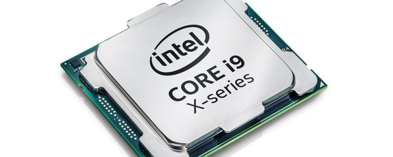
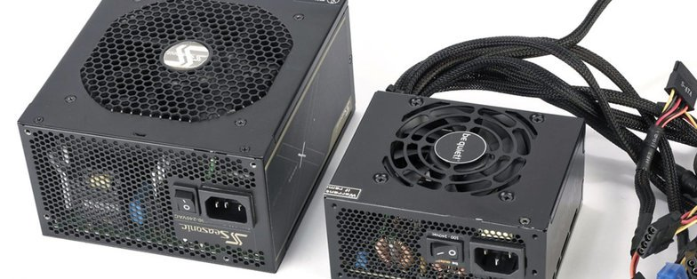

Las placas base —también conocidas como placas madre o tarjetas madre en América, y motherboard en inglés— son el elemento central de cualquier PC. No suele haber grandes diferencias de calidad entre ellas a igualdad de precio y, si bien pueden variar en el chipset que implementan para realizar el control de los distintos elementos, ese chipset viene especificado por las compañías de procesadores.

Los fabricantes pueden añadir características adicionales, como un mejor chip de audio o de red, añadir más o menos ranuras PCIe y de almacenamiento como M.2, o incluso añadir ledes para las placas para jugones. Pero el sector de las placas base está muy maduro y casi todas dan calidades muy parecidas.
Procesadores.
Si estás deseando cambiar de PC y no sabes qué procesador elegir, quizás esta pequeña guía te ayude a decidirte. Los procesadores más económicos suelen ser buenos para un uso ofimático, incluso para un PC para juegos/gaming acompañados de una tarjeta gráfica económica. Si eres un usuario más avanzado, necesitarás un procesador más potente y caro, sobre todo si haces diseño gráfico, computación o te gusta jugar a la máxima calidad posible a 4K.

Antes de empezar a leer, es conveniente tener claro que
la potencia de los procesadores no depende únicamente de aspectos como la frecuencia base y turbo que tengan. La arquitectura interna con la que esté creados es lo que más influye, por encima de las frecuencias, con parámetros como la cantidad de memoria caché que incluyan o el número de instrucciones máquina que pueden ejecutar simultáneamente como aspectos importantes. Por eso es conveniente consultar las gráficas de rendimiento y los análisis de los procesadores para hacerse una buena idea de su potencia.
Memoria RAM.
Cuando quieres comprar un ordenador nuevo, muchas veces te puedes parar a pensar en cuánta memoria (RAM) necesitas para el día a día. Es fácil dejarse convencer por los vendedores, o las ganas de tener lo mejor de lo mejor. Pero antes de gastar tus ahorros duramente ganados, tienes que pensar el uso que le vas a dar al equipo, y para ello nada mejor que consultar esta guía sobre módulos de memoria (RAM).
En ella podrás encontrar una explicación de las distintas características de los módulos de memoria, los formatos que hay, y cuánta memoria necesitarás en función del uso que le vayas a dar. Al fin hay una práctica clasificación de precio por giga para los que quieran mirar simplemente los módulos de RAM más baratos del mercado.
Tarjeta Gráfica.
El mundo de las tarjetas gráficas cambia mucho de mes a mes, precios incluidos. Para haceros más llevadera la búsqueda de nuevo hardware para tu equipo. La GeForce GTX 1030 es una tarjeta gráfica de gama baja que puede mover gráficos a 1080p con una calidad baja en una gran cantidad de juegos, pero que en otros más exigentes será necesario bajar la resolución para jugarlos con una fluidez suficiente. Sin embargo, en juegos de deportes electrónicos como Overwatch o League of Legends, no tiene problemas en moverlos a 1080p y calidad alta a 60 FPS, por lo que puede ser una buena comprar para los jugones menos pudientes o que no les interese tanto la calidad gráfica sino solamente jugar. Sus conexiones de vídeo suelen ser un HDMI y un DisplayPort,y otros modelos incluye un DVI-D, o sustituyen alguno de los anteriores por él —o incluyen uno de cada.

Fuente de Alimentación
Todo Pc que se quiera montar no estara completo sin una fuente de alimentación, y es necesario dedicar tiempo a elegir la mejor para las necesidades del equipo aunque suele haber fuentes que no dan malos resultados por precios tan bajos como 20 euros, siempre asalta la duda por que hay fuentes mas caras. La repuesta, como todo, esta en la calidad de la fuente , y encontraras explicado mas adelante que tienes que mirar para elegir una buena fuente de Alimentación o PSU.<\P>

Ventiladores y refrigeracion liquida
Una Buena refrigeración para el procesador (cpu) ya sea por aire con un disipador y ventilador, o por agua, es una necesidad a la que muchos usuarios no le prestan atención hasta que es demasiado tarde. La acumulación de calor en torno a los componentes —tarjeta gráfica, procesador, discos duros, placa, o fuente— hace que rindan peor, consuman más electricidad, y provocan una aceleración en su desgaste y una disminución de su vida útil.

Es muy habitual que las fuentes de alimentación dejen de funcionar, o que el equipo se apague por sí solo si el procesador llega a unos niveles de temperatura superiores a los máximos para su buen funcionamiento. Por ello es necesario mantener el equipo bien refrigerado con un disipador, y en la siguiente guía encontraréis las mejores opciones para mantener vuestros componentes en temperaturas adecuadas.
Caja.
Uno de los elementos básicos que se necesitan en todo PC es una caja —también llamada gabinete en América— en la que colocar todos los componentes. Vienen en distintas formas y tamaños, y por lo general cuanto más exclusivo sea su diseño, más resistentes sean y fáciles de montar los componentes, más cara será.